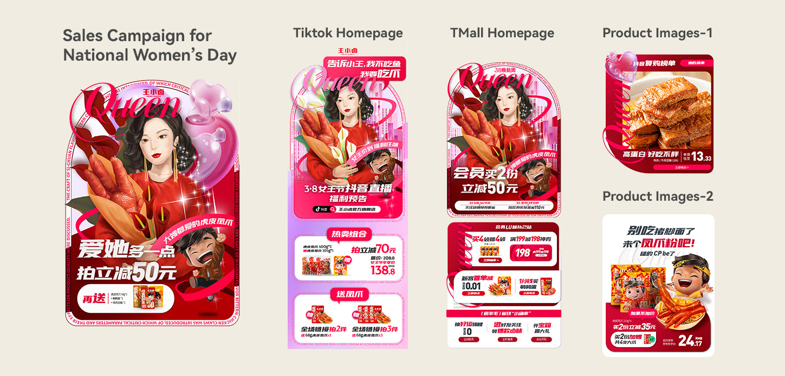
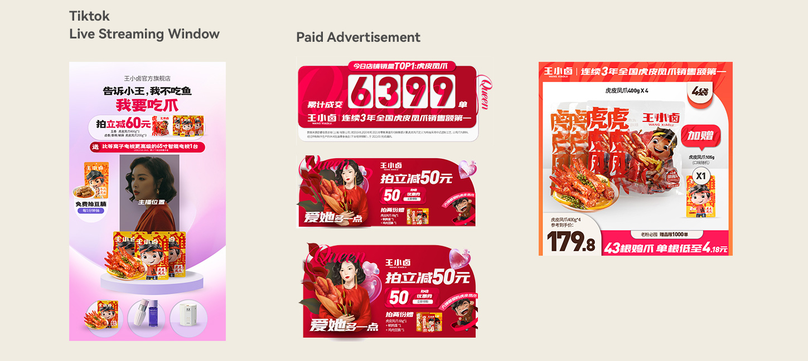
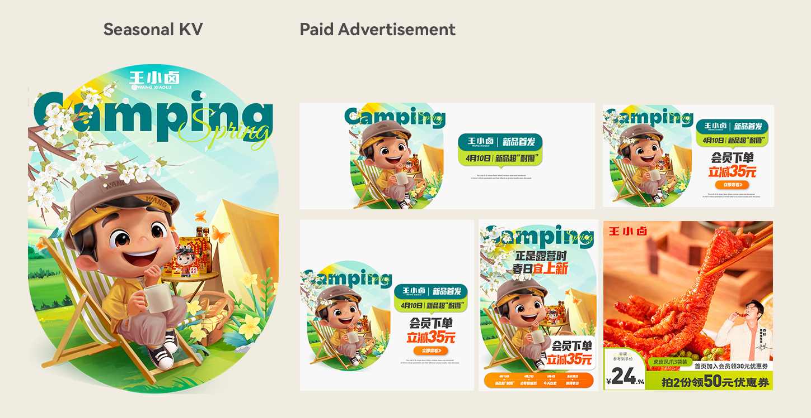

A paid-media system built from brand rules.
Paid advertising was divided into two visual modes: high-intensity sales campaigns and more restrained daily communication. Both were governed by the same design guidelines so the brand could stay recognisable while adapting to very different commercial moments.
Use colour hierarchy to signal commercial intensity.
Sales campaign
For major promotional moments, red occupied at least 65% of the composition. As the brand colour, it also supported the stronger promotional energy expected in food and retail campaigns.
Daily communication
For everyday content, red was reduced to roughly 5–10%. The lighter treatment created more space for brand story, product mood and a relaxed snacking experience rather than constant promotion.

A campaign system translated across marketplace, livestream and product-image formats.
One campaign, many commercial touchpoints.
Sales-campaign assets extended beyond a single D2C platform. The same visual language had to travel through Tmall, TikTok livestream environments, paid media, offline placements, livestream props and traffic-driving lifestyle content.

Livestream and paid-advertising executions kept the same campaign codes while adapting to different formats.
The objective was not to make every asset identical. It was to maintain enough continuity that repeated exposure still felt like one campaign, strengthening recognition of the promotion and reducing visual friction between discovery, click-through and purchase.
Daily design needed a different emotional register.
Outside major promotional periods, the same guideline was applied with more restraint. The work shifted toward friendliness, brand character and lifestyle storytelling, helping the product feel connected to relaxed, enjoyable snacking moments rather than only discount-driven consumption.

Seasonal creative used the same brand system with a softer, more lifestyle-led expression.
Consistency became the operating principle.
Across both campaign and everyday work, the design guideline established repeatable rules for colour, hierarchy and key-visual reproduction. This allowed creative executions to change while the underlying system remained recognisable across channels.
Red coverage for major sales campaigns
Red coverage for daily brand communication
D2C, livestream, paid media and offline touchpoints
Creative variation within a consistent visual framework
Brand consistency is not about repeating one layout. It is about creating a visual system that stays recognisable while commercial intensity changes.